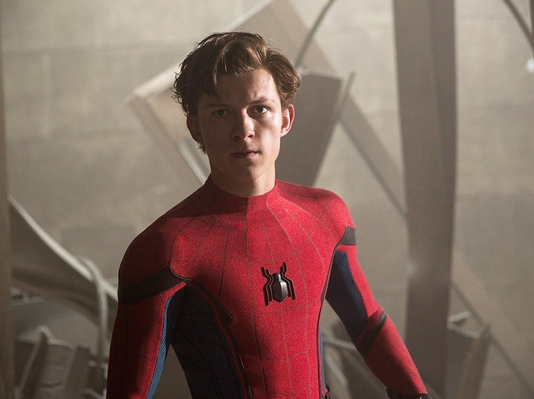

ทอม ฮอลแลนด์" ลั่น Spider-Man 3 จะเป็นหนังซูเปอร์ฮีโร่ที่ทะเยอทะยานที่สุดตั้งแต่มีการสร้างมา
หนึ่งในนักแสดงที่ “หลุด” ความลับในกองถ่ายหนังมาร์เวลเก่งเบอร์หนึ่ง จนค่ายหนังต้องปวดหัวอยู่บ่อยครั้ง แต่พักหลังมานี้ ทอม ฮอลแลนด์ ก็ดูจะต้องระมัดระวังตัวเป็นพิเศษกับการเปิดเผยอะไรก็ตามที่เกี่ยวข้องกับบทในกองถ่ายมิเช่นนั้นแล้วค่ายอาจจะลงดาบเขาเป็นกรณีพิเศษ อย่างไรก็ตามบทความนี้อาจจะมีการเปิดเผยสิ่งสำคัญในหนังภาคนี้รวมถึงบางประเด็นในจักรวาล MCU ถ้าคุณยังไม่อยากรู้และอยากจะไปลุ้นเอาเองในภาพยนตร์ก็ควรจะปิดบทความนี้เสียตั้งแต่ตอนนี้

แม้ว่าล่าสุดจะยังไม่มีการเปิดเผยชื่อตอนของ Spider-Man 3 ซึ่งตอนนี้กองถ่ายกำลังเดินหน้าถ่ายทำอยู่ แต่ดูเหมือนกับว่าบรรดาข่าวลือจากรอบกองถ่ายที่รั่วออกมาเป็นระยะ ไม่ว่าจะเป็นการที่นักแสดงอย่างเจมี่ ฟอกซ์ ผู้เคยรับบทบทเป็นอิเล็กโตรใน The Amazing Spider-Man 2 มาร่วมเป็นส่วนหนึ่งในหนังภาคนี้ เช่นเดียวกันกับ อัลเฟรด โมลิน่า จาก Spider-Man 2 (เวอร์ชั่นโทบี้ แมคไกวร์) ที่กลับมารับเป็นด็อค อ๊อก ยิ่งทำให้สมมติฐานที่ว่า Spider-Man 3 อาจจะมีลักษณะคล้ายกับ Spider-Man: Into the Spider-Verse ที่มีการเอาสไปเดอร์แมนจากหลายจักรวาลคู่ขนานมาอยู่ร่วมกันในจักรวาลเดียว ดังนั้นจึงมีความเป็นได้สูงมากที่เราอาจจะมีโอกาสได้เห็นเหล่านักแสดงจากเวอร์ชั่นเก่าๆของสไปเดอร์-แมน ไม่ว่าจะเป็น โทบี้ แมคไกวร์ แอนดรูวส์ การ์ฟิลด์ คริสเทน ดัตส์ และเอ็มม่า สโตนมาปรากฏตัวร่วมกับสองตัวละครหลักอย่างทอม ฮอลแลนด์ และเซนดาย่า